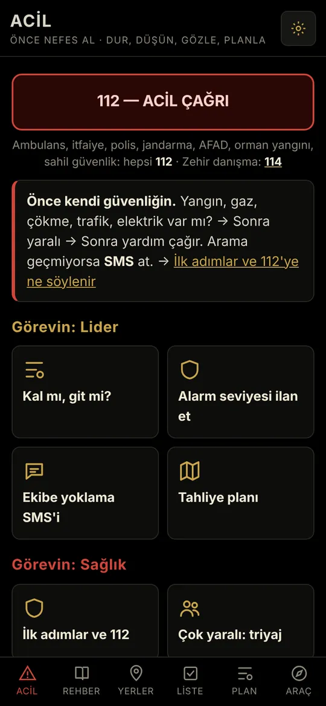
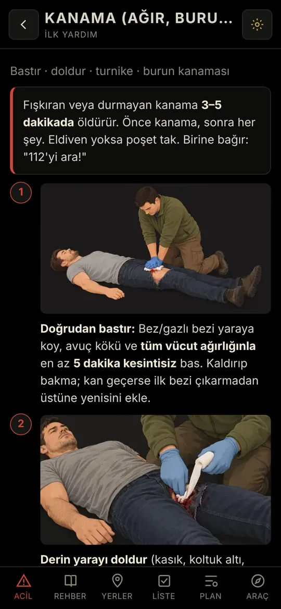
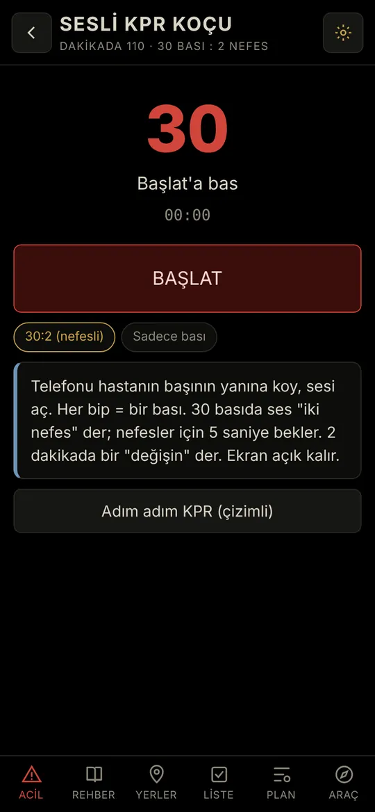
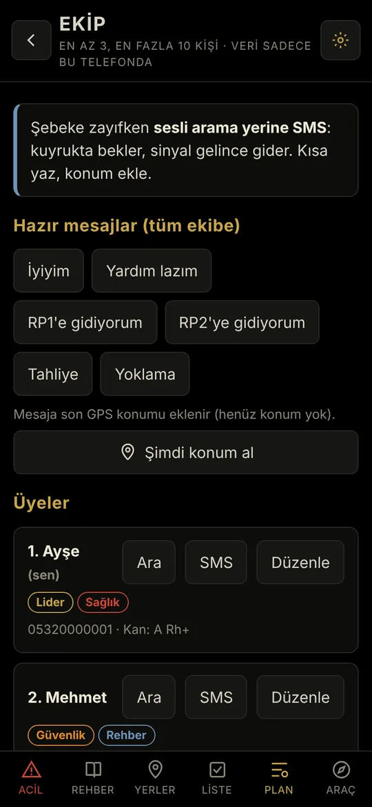
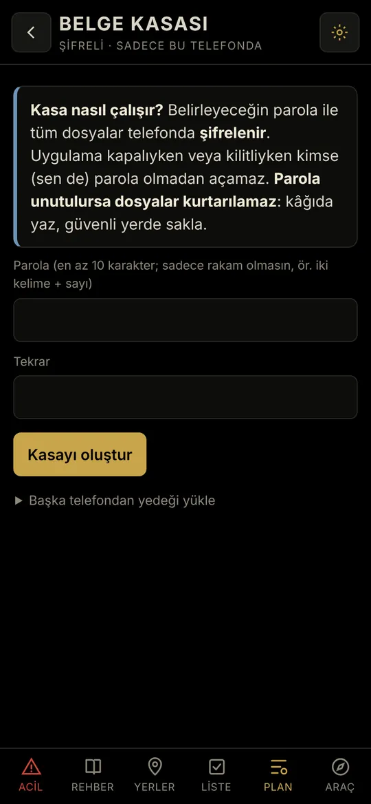
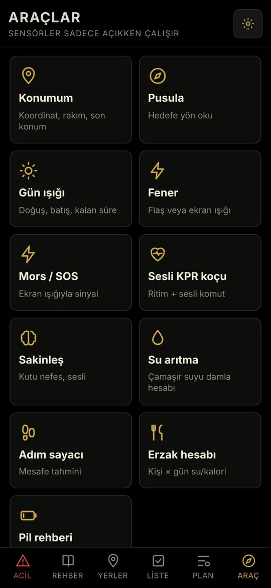
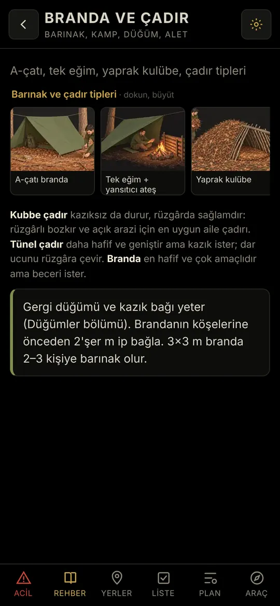
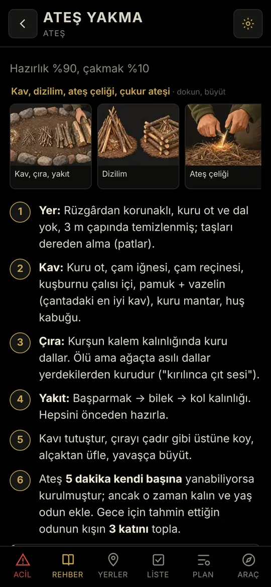
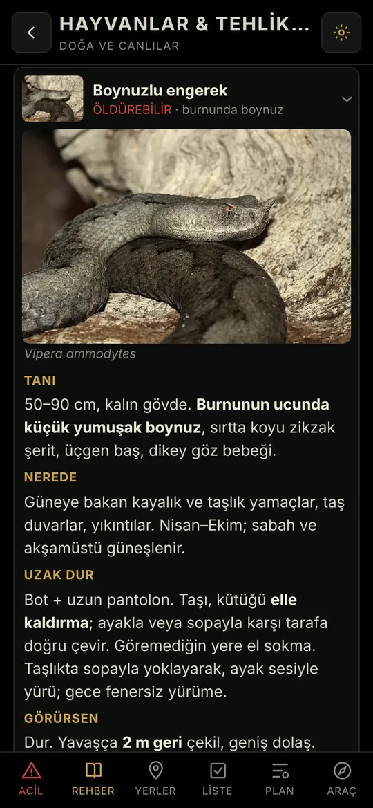

Uçak modu açıkHazırkal çalışıyor
Şebeke çökünce de açılır.
Deprem, sel, yangın ya da yolda kaldığın bir gece. Hazırkal ilk yardım adımlarını, ekibini, buluşma noktalarını ve önemli belgelerini telefonunda, internet olmadan hazır tutar.
Uygulamayı kur: Android'de ve iOS'ta (iPhone, iPad) web uygulaması olarak çalışır. Ücretsiz, hesap istemez, kurduktan sonra internet gerekmez. Beta sürüm: ilk yardım içeriği doktor kontrolünden geçiyor.

Kriz anında aradığın her şey tek yerde
Düşünecek vakit olmadığında ne yapacağını adım adım söyler. Hepsi telefonunda kurulu durur; sinyal, Wi-Fi ya da hesap gerekmez.
Adım adım ilk yardım
Kanamadan kalp masajına, kalp krizinden yılan ısırığına 24 konu. Her adım tek bir iş ve çizimli. Türkiye'nin resmî ilk yardım rehberine göre hazırlandı; sesli KPR koçu ritmi tutar.
Ekibin hazır
En az üç kişilik ekip, roller (lider, sağlık, güvenlik, rehber, erzak), kan grupları. Konumunu tek dokunuşla SMS ile gönder: internet değil, telefon hattı yeter.
Buluşma noktaları ve harita
Ailenin buluşma yerlerini, e-Devlet'teki AFAD toplanma alanını, köy evini, akrabanı kaydet. Konumlar açık kaynaklı ve internetsiz çalışan Organic Maps ile açılır.
Şifreli belge kasası
Sağlık sigortası, DASK, kasko, reçete: telefonda, senin parolanla şifreli durur ve kimseye gönderilmez.
Telefonun alet çantası
Pusula, fener, ekran ışığıyla Mors ve SOS, su arıtma damla hesabı, erzak hesabı, pili günlerce idare etme rehberi.
81 ilin doğası
Barınak, ateş, su bulma ve arıtma, düğümler. İlini seçersin; yılanlar, akrepler, deniz canlıları, iklim ve deprem bilgisi iline göre gelir.








Verin telefonundan çıkmaz
Afet uygulaması güven ister. Bu yüzden ne yapmadığımızı açıkça yazıyoruz.
- Android sürümünün internet izni yok: bağlanmak istese de bağlanamaz.
- Hesap, e-posta ya da telefon numarası istemez.
- Uygulamada reklam ve takip kodu yok.
- Belgelerin telefonunda, senin parolanla şifreli durur.
- Kaynak kodu açık: söylediklerimizi herkes kontrol edebilir.
iPhone'da durum biraz farklı: Apple, Türkiye'de App Store dışından uygulama kurulmasına izin vermiyor. Bu yüzden iPhone'da Hazırkal, ana ekrana eklenen bir web uygulamasıdır. Web uygulamalarında telefonun tarayıcısı, internete bağlıyken yeni sürüm olup olmadığına kendisi bakar; bu tarayıcının özelliğidir ve kapatılamaz. Bu kontrolde yalnızca sürüm dosyası istenir, senin girdiğin hiçbir bilgi gönderilmez; yeni sürüm varsa indirilir ve güncellemeden önce sana sorulur. İnternet hiç olmasa da uygulama tam çalışır. Ayrıntılar: Gizlilik.
Resmî uygulamaların yerini tutmaz, onları tamamlar
Onlar yardım çağırır. Hazırkal, yardım gelene kadar ne yapacağını söyler. Hepsini kur.
AFAD Acil
En yakın toplanma alanı ve yol tarifi, 112 çağrısı, hazır acil mesajlar.
HAYAT 112 Acil
112'ye ihbar; internet yokken konumunu SMS ile 112'ye gönderebilir.
Türk Kızılay
Kan bağışı, afet duyuruları ve ilk yardım eğitimleri.
Kurulum bir dakika sürer
Hazırkal Android'de ve iOS'ta web uygulaması olarak çalışır. Bir kez internet varken kur, sonra unut. Mağaza, hesap ya da ödeme yok.
Android
- uygulama.hazirkal.com adresini Chrome ile aç.
- Sağ üstteki ⋮ menüden "Uygulamayı yükle" ya da "Ana ekrana ekle"yi seç.
- Ana ekrandaki Hazırkal'ı internet varken bir kez aç. Sonra internetsiz çalışır.
iPhone ve iPad (iOS)
- uygulama.hazirkal.com adresini Safari'de aç.
- Paylaş düğmesine dokun, "Ana Ekrana Ekle"yi seç.
- Ana ekrandaki Hazırkal'ı internet varken bir kez aç. Sonra internetsiz çalışır.
Haritalar için internet varken Organic Maps'i kur ve ilinin haritasını indir. Uygulamanın Ayarlar bölümünden ara sıra yedek al: iPhone'un yeri dolarsa web uygulamalarının verisini silebilir.
Kimler için
Ekip kurulur, herkes rolünü seçer; ana ekran role göre düzenlenir.
- Aileler
- Apartman ve site komşuları
- İşyeri acil durum ekipleri
- Okullar
- Dağcılar, kampçılar, kayakçılar
- Kendi başına hazırlık yapanlar
Sürüm ve doğrulama
Yayındaki sürümü ve kaynak kodunu burada görebilirsin.
- Sürüm
- 0.9 beta, web uygulaması: Android ve iOS (Kasım 2026)
- Kaynak kodu
- github.com/hazirkalturkiye/hazirkal (GPL-3.0; içerik CC BY-SA 4.0)
Sorular
Gerçekten internete bağlanmıyor mu?
Uygulama hiçbir sunucuya bilgi göndermez, kimseyi takip etmez. Web uygulamasında sayfaya gömülü güvenlik kuralı arka planda bağlantı kurulmasını tarayıcı düzeyinde engeller; tarayıcı yalnızca yeni sürüm olup olmadığına bakar (aşağıda).
İnternete bağlanmadığını kendim nasıl test ederim?
En kolayı: telefonu uçak moduna al ve uygulamayı aç; her şey çalışır. Teknik bilgin varsa uygulama.hazirkal.com'u bilgisayarda aç ve tarayıcının geliştirici araçlarındaki Ağ sekmesine bak: uygulamayı kullanırken hiçbir yere istek gitmez. Kaynak kodunda hiçbir ağ isteği olmadığını da kendin kontrol edebilirsin.
Neden internet varken sürüm kontrolü yapıyor?
Hazırkal Android'de ve iOS'ta ana ekrana eklenen bir web uygulaması olarak çalışır. Web uygulamalarında telefonun tarayıcısı, internete bağlıyken yeni sürüm olup olmadığına kendisi bakar. Bu tarayıcının özelliğidir, kapatılamaz. Bu kontrolde yalnızca sürüm dosyası istenir; senin girdiğin hiçbir bilgi gönderilmez. Yeni sürüm varsa indirilir ve güncellemeden önce sana sorulur.
Verilerim nerede? Telefonumu değiştirirsem ne olur?
Her şey yalnızca senin telefonunda durur. Uygulamanın Ayarlar bölümündeki "Yedekle" ile ekibini, buluşma noktalarını ve listelerini yeni telefona taşıyabilirsin. Belge kasası ayrıca ve şifreli olarak yedeklenir.
Belge kasasının parolasını unutursam?
Parolayı biz bilmeyiz ve kurtaramayız; belgelerin güvende olmasının nedeni bu. Parolayı kâğıda yazıp evde güvenli bir yerde sakla.
Pil ve yer harcar mı?
Arka planda çalışmaz; açmadığın sürece pil harcamaz. Telefonda yaklaşık 10 MB yer kaplar.
Ücretli mi? Reklam var mı?
Uygulama ücretsiz ve reklamsız. Hiçbir zaman ücretli olmayacak, içine hiçbir zaman reklam konmayacak.
Haritaya basınca neden Google Maps açılmıyor?
Hazırkal internetsiz çalışsın diye konumları ve rotaları açık kaynaklı Organic Maps ile açar. Google Maps çoğu zaman internet ister; şebeke çökünce işe yaramayabilir. İnternet varken Google Play ya da App Store'dan Organic Maps'i kur, ilinin haritasını indir. Sonra Hazırkal'da bir konuma dokununca harita internetsiz açılır.
Neden Google Play'de değil?
Herkes bir mağazaya ya da hesaba bağlı kalmadan, doğrudan ve ücretsiz kurabilsin diye. Hazırkal'ı uygulama.hazirkal.com adresinden web uygulaması olarak kurarsın; Android'de ve iOS'ta çalışır.
Sahte bir Hazırkal'ı nasıl anlarım?
Hazırkal'ı yalnızca uygulama.hazirkal.com adresinden kur. Ücret isteyen, hesap açtıran ya da reklam gösteren bir sürüm bizim değildir.
Bilgiler nereden geliyor?
İlk yardım bölümü Sağlık Bakanlığı'nın İlk Yardım Uygulamaları Beceri Rehberi'ne, deprem bölümü AFAD'ın önerilerine göre hazırlandı. Diğer konuların kaynakları uygulamanın Kaynaklar sayfasında tek tek yazılı.
İlk yardım kursunun yerini tutar mı?
Hayır. Hazırkal hatırlatır ve yol gösterir; elle yapılan uygulamayı ancak bir kursta öğrenirsin. Bir ilk yardım kursuna katıl, acil durumda önce 112'yi ara.
Okulumda, işyerimde, sitemizde kullanabilir miyiz?
Evet, herkes için ücretsiz. Kurumunuza özel yerler, ekipler ve görevlerle hazırlanmış bir sürüm isterseniz aşağıdaki formdan yazın.
Benim ilim de var mı?
81 ilin hepsi var. Kurulumda ilini seçersin; yılanlar, akrepler, deniz canlıları, iklim ve deprem bilgisi iline göre gelir. Yayılış bilgisi bölge düzeyinde. Kaçış ve buluşma noktalarını ise herkes kendi evine göre ekler. İlinle ilgili eksik ya da yanlış bir bilgi görürsen formdan yaz, birlikte düzeltelim.
Beta ne demek?
Uygulama çalışıyor ve kullanılabilir, ama ilk yardım bölümü doktorlarımızın kontrolünden geçiyor ve her hafta düzeltme yapıyoruz. Bir hata ya da eksik görürsen formdan yaz. Web uygulaması internete bağlandığında düzeltmeleri kendiliğinden alır.
Başka dillerde var mı?
Şu an yalnızca Türkçe. Başka dillere çeviri için gönüllü arıyoruz.
Bu uygulama hepimizin
Hazırkal'ı bitmiş bir iş değil, bir başlangıç olarak görüyoruz. Uygulamayı kodlama bilgimiz olmadan, yapay zekâ ile birlikte yazdık ("vibe coding" deniyor). Bu yüzden her göz, her öneri değerli. Hep birlikte daha iyisini yapabiliriz.
- Bir hata ya da yanlış bilgi gördüysen yaz. İlk yardım bilgilerini doktorlarla kontrol edip düzeltiriz.
- İlindeki hayvanları, bitkileri, afet risklerini ve bildiğin kaynakları paylaş.
- Yazılım ya da güvenlik uzmanıysan kodu incele. Bir açık bulursan önce bize bildir, herkese açık yazma; hemen güvenlik güncellemesi yayınlarız.
- Kod açık: bütün içeriği görebilir, uygulamanın internete bağlanmadığını kendin test edebilirsin.
- Çeviri yap, uygulamayı ailene, apartmanına, okuluna ve işyerine anlat.